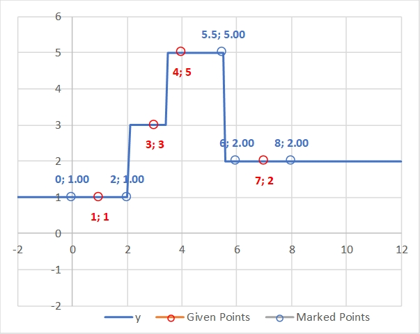
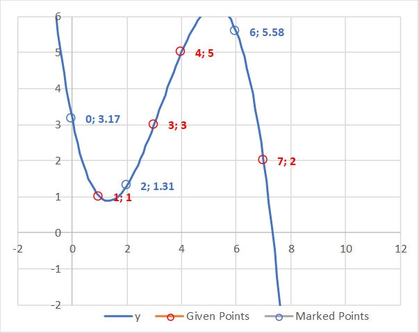

Nearest Neighbor Interpolations
Assumption, applicable to all examples below: x[] = = {-2 .. -1.9 .. 12 }; // Creates sequence of -2, -1.9, -1.8, … 11.8, 12.
Example 1: nearest neighbor interpolation ( x[ ], { 1, 3, 4, 7 }, { 1, 3, 5, 2 }, flat );

Example 2: nearest right neighbor interpolation ( x[ ], { 1, 3, 4, 7 }, { 1, 3, 5, 2 }, continue );

Linear Interpolations
Example 1: linear interpolation ( x[ ], { 1, 3, 4, 7 }, { 1, 3, 5, 2 }, 0.1 ); // Using slope = 0.1

Example 2: linear interpolation ( x[ ], { 1, 3, 4, 7 }, { 1, 3, 5, 2 }, continue );

Spline Interpolations
Example 1: spline interpolation ( x[ ], { 1, 3, 4, 7 }, { 1, 3, 5, 2 }, zero );

Example 2: spline interpolation ( x[ ], { 1, 3, 4, 7 }, { 1, 3, 5, 2 }, continue );

Polynomial Interpolations
Example 1: polynomial interpolation ( x[ ], { 1, 3, 4, 7 }, { 1, 3, 5, 2 }, flat );

Example 2: polynomial interpolation ( x[ ], { 1, 3, 4, 7 }, { 1, 3, 5, 2 }, continue );
